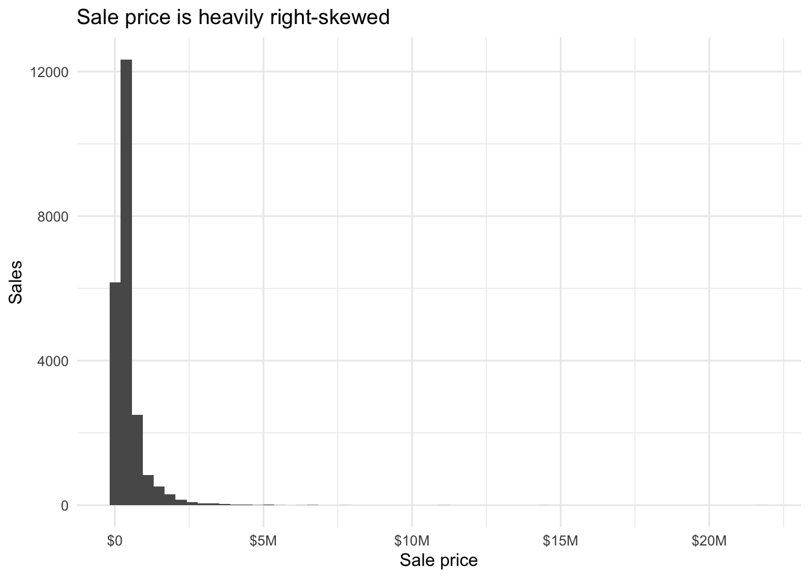
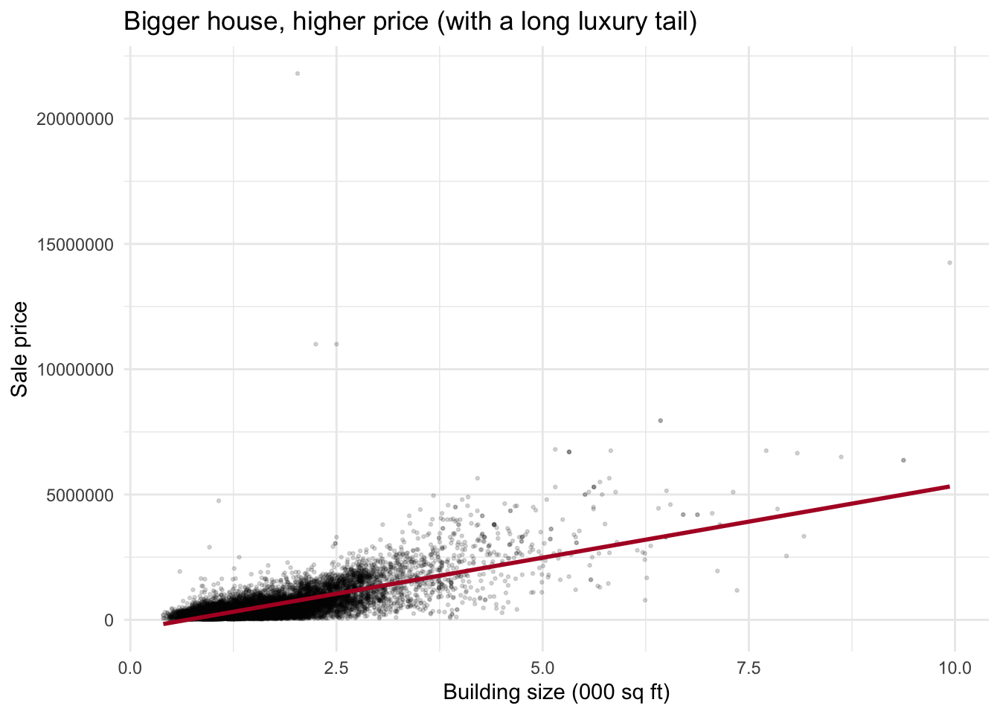
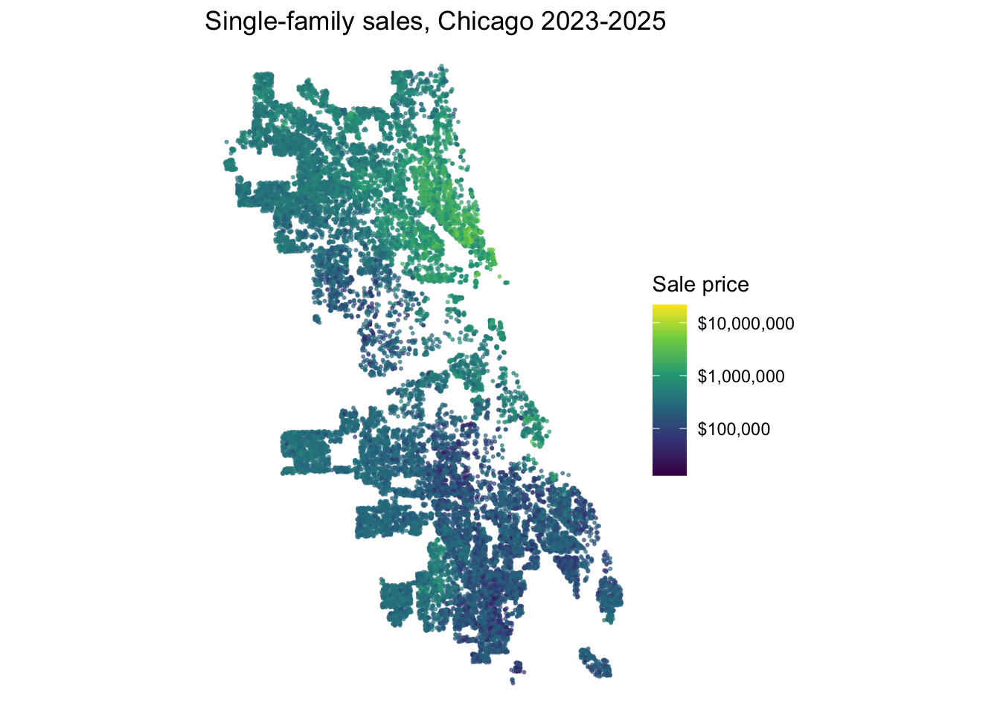
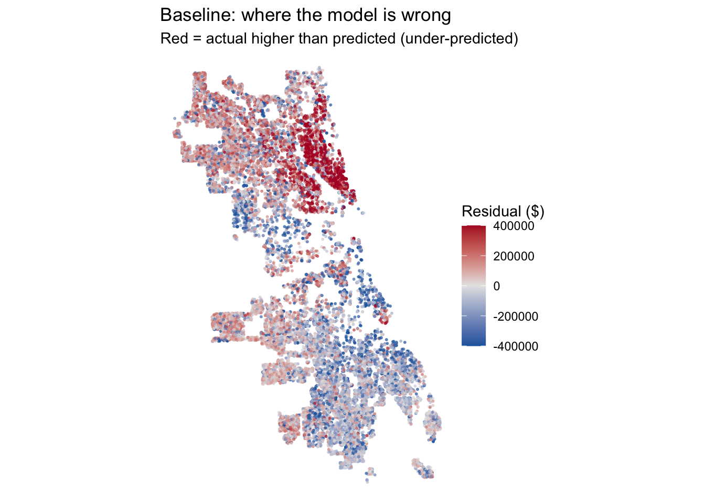
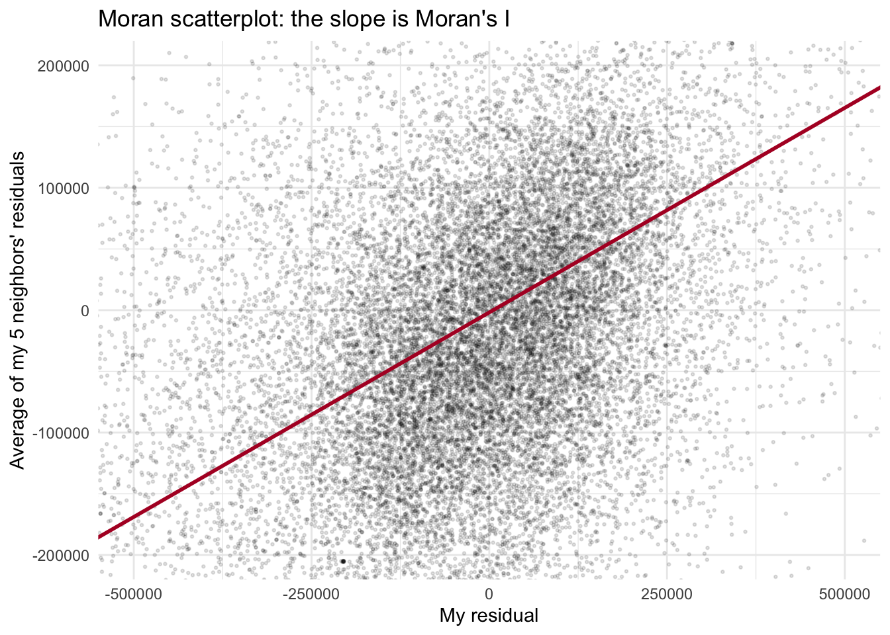

Code
library(tidyverse)
library(tidycensus)
library(sf)
library(caret)
library(spdep)
library(nngeo)
library(scales)
options(scipen = 999)MUSA 5080 · Team assignment
Team ___: Qiwen Bian, Manching Ho, Fujia Zheng, Lang Tao
October 24, 2026
In class we built a house price model for Philadelphia. Now your team does it for a city you haven’t modeled: Chicago.
The Cook County Assessor’s Office has to value every home in the county, including the vast majority that didn’t sell this year. Assessments drive property tax bills. When they’re wrong in a systematic way, some households pay more than their share. A 2017 Chicago Tribune investigation, “The Tax Divide,” found exactly that in Cook County: lower-value homes were assessed at higher shares of their worth than expensive ones.
Build a model that predicts single-family sale prices in Chicago, 2023–2025, using only the tools from this course. The file contains only features of the house itself. Everything about location is yours to build.
| File | What’s in it |
|---|---|
chicago_train.csv |
About 80% of the houses, with sale prices |
chicago_test.csv |
The other 20%, without sale prices. You predict them; we score you. |
The test houses were held out by house, not by sale, so a house that sold twice is entirely on one side. Your CV RMSE is your estimate. Your test RMSE is the truth. If they’re far apart, something leaked.
Due: Friday, October 30. All teammates renders the file on their portfolio and every member submits that link on Canvas. One teammate uploads team_XX_predictions.csv.
Individual accountability: Q7 on October 30 asks each of you about this model: which features you used and why, your CV and test RMSE, and where the model fails worst. Make sure everyone can explain all of it.
You must predict every test house, so fill NAs in a feature rather than filtering.
Open data from 2023–2025 only.
Nothing built from sale prices. Would the Assessor have this number for a house that didn’t sell?
Transform predictors, not sale_price.
No features built from other houses’ sale prices.
| Model log | Every model you tried, in order, with CV RMSE and Moran’s I. Each row has a note saying why you tried it. |
| Features | Incorporate the feature engineering tricks - including the spatial ones covered these past few weeks. |
| Diagnostics | Residual maps for your baseline and final model, and what changed. |
| Error analysis | Where your final model fails worst, and whose homes it over-values (Part 4). |
| Reasoning | Choices justified by evidence from your own analysis. |
These helpers are to help you get off the ground.
check_na <- function(formula, df) {
vars <- all.vars(formula)
bad <- vars[sapply(vars, function(v) any(is.na(df[[v]])))]
if (length(bad) > 0) {
stop("These variables have NAs: ", paste(bad, collapse = ", "),
". Fill them or choose another variable (Rule 1).")
}
}
# 10-fold CV RMSE, same folds every time
cv_rmse <- function(formula, data) {
df <- if (inherits(data, "sf")) st_drop_geometry(data) else data
check_na(formula, df)
set.seed(5080)
fit <- train(formula, data = df, method = "lm",
trControl = trainControl(method = "cv", number = 10))
fit$results$RMSE
}
# Each house's prediction from the fold where it was held out
cv_pred <- function(formula, data) {
df <- if (inherits(data, "sf")) st_drop_geometry(data) else data
check_na(formula, df)
set.seed(5080)
fit <- train(formula, data = df, method = "lm",
trControl = trainControl(method = "cv", number = 10,
savePredictions = "final"))
fit$pred %>% arrange(rowIndex) %>% pull(pred)
}
# Chicago Data Portal (Socrata) -> sf. `where` is a SoQL filter.
socrata_get <- function(dataset, where, select = NULL, limit = 200000) {
where <- str_squish(where)
q <- paste0("$where=", URLencode(where, reserved = TRUE), "&$limit=", limit)
if (!is.null(select)) q <- paste0(q, "&$select=", URLencode(str_squish(select), reserved = TRUE))
url <- paste0("https://data.cityofchicago.org/resource/", dataset, ".geojson?", q)
tmp <- tempfile(fileext = ".geojson")
resp <- tryCatch(download.file(url, tmp, quiet = TRUE), error = function(e) e)
if (inherits(resp, "error")) stop("Portal request failed. Open this URL in a browser to see why:\n", url)
st_read(tmp, quiet = TRUE)
}Build every feature on all_sales, so training and test houses get identical features. Split off train again whenever you add something.
all_sales <- bind_rows(
read_csv("assignments/assignment5-data/chicago_train.csv", show_col_types = FALSE) %>% mutate(split = "train"),
read_csv("assignments/assignment5-data/chicago_test.csv", show_col_types = FALSE) %>% mutate(split = "test")
) %>%
st_as_sf(coords = c("lon", "lat"), crs = 4326) %>%
st_transform(3435) # Illinois East State Plane, feet
all_sales %>% st_drop_geometry() %>% count(split)# A tibble: 2 × 2
split n
<chr> <int>
1 test 5789
2 train 23200Useful sources: the Chicago Data Portal (find a dataset’s ID under its API button), the Census via tidycensus, and Cook County’s open data.
Decide which training sales are market sales. Record each rule, why, and how many it removed. Then explore: at least four plots, including a map of price.
清洗只对 split == "train" 的行做,测试集一行都不能丢(作业 Rule 1)。每条规则都要写下理由和它删掉了多少行——“什么算市场交易”是建模决策,不是数据里自带的。
train_raw <- all_sales %>% filter(split == "train")
n0 <- nrow(train_raw)
keep_1 <- train_raw$sale_price >= 10000
keep_2 <- keep_1 & train_raw$sale_price / (train_raw$building_000sf * 1000) >= 20
keep_3 <- keep_2 & train_raw$building_000sf >= 0.3
cleaning_log <- tibble(
rule = c("sale_price >= $10,000",
"price per sq ft >= $20",
"building >= 300 sq ft"),
why = c("Nominal / non-arm's-length transfers ($1 family sales, sheriff sales)",
"Below ~$20/sq ft a 'sale' is not market value (median is ~$250/sq ft)",
"Structures smaller than a studio are data errors, not livable houses"),
dropped = c(sum(!keep_1), sum(keep_1 & !keep_2), sum(keep_2 & !keep_3))
) %>%
mutate(remaining = n0 - cumsum(dropped))
train <- train_raw[keep_3, ]
cleaning_log# A tibble: 3 × 4
rule why dropped remaining
<chr> <chr> <int> <int>
1 sale_price >= $10,000 Nominal / non-arm's-length transfers… 0 23200
2 price per sq ft >= $20 Below ~$20/sq ft a 'sale' is not mar… 100 23100
3 building >= 300 sq ft Structures smaller than a studio are… 1 23099讲解: 第一条规则删 0 行——费城课上见过的 $1 转让在芝加哥这份数据里已经被上游过滤掉了(最便宜的一笔是 $10,373),但我们仍然把它写进日志,证明检查过。真正起作用的是第二条:全城价格中位数约 $250/平方英尺,一套”卖”不到 $20/平方英尺的房子几乎肯定不是市场行为(亲属过户、法拍、公司倒手),删掉 100 行。第三条删掉 1 套不到 300 平方英尺的”房子”。共删 101 行,23,200 → 23,099。另外两个决定:(1) building_age == 0 的 226 套是真新建房(价格中位数 $1.4M),保留——芝加哥数据里 0 表示”今年建成”,不像费城数据里 0 表示未知;(2) 顶端的豪宅尾巴($21.8M 那笔)是真实市场交易,保留,但它会拉大 RMSE,后面建模时再处理。
NA 的处理策略:基线用到的四个特征(面积、房龄、卧室、卫生间)在训练集和测试集都没有缺失。num_fireplaces(349 个 NA)、num_half_baths(38)、garage_size(11)这些列以后要用的话,用中位数/众数填补而不是删行——测试集里它们也有 NA,而测试行必须全部预测。



讲解: 三张图三个信息。直方图:价格严重右偏——中位数 $303k、均值 $443k、最高 $21.8M,意味着线性模型的误差会 predominantly 来自豪宅尾巴(误差分布不对称,RMSE 被少数大额错判主导)。散点图:面积和价格正相关,但散点在上方张开(同样的面积,价格差好几倍),这正是”位置”该解释的部分。地图:北侧和湖滨贵(黄色)、南侧大片便宜(紫色)——这就是 Tribune “The Tax Divide” 的空间背景,也是后面 4B 要回答”模型高估了谁的房子”的地方。(Part 1 最终要求至少 4 张图,还差 1 张,留给团队补一张按年份或按社区的分面图即可。)
Answer: What in your exploration shaped your modeling choices?
Your answer (中文草稿,提交前翻成英文): 价格严重右偏且豪宅尾部很长,说明基线 RMSE 会被少数高端交易主导,后续特征工程应优先帮助中低价段;面积与价格的散点在高价端大幅张开,说明同样的结构在不同地点价格差异巨大,位置特征(到湖滨/市中心距离、社区效应)预计最有收益;价格地图显示南北价格分异明显,提示残差可能呈空间聚集——正好用本周的 Moran’s I 检验。
Start with a structure-only baseline. Then add features in steps you can learn from, logging each one. Keep the log in a tibble with columns model, added, cv_rmse, moran_i, notes.
[1] 350408.9讲解: 基线只用”房子本身”的四个特征:面积(千平方英尺)、房龄、卧室数、卫生间数。这正是数据文件里给的全部——所有关于位置的信息都要我们自己建。cv_rmse() 是 Part 0 提供的 10 折交叉验证,固定种子 5080,保证模型日志里每一行用的是同一套折,可以互相比较。读数:CV RMSE ≈ $350,409——模型在没见过的房子上平均偏差约 35 万美元,而房价中位数才 $303k。这个”不及格”的基线就是我们的起点,后面每个特征都要跟它比。
1% 5% 95% 99%
-714751.9 -451535.0 410404.7 975078.3 ggplot(train) +
geom_sf(aes(color = resid), size = 0.4, alpha = 0.6) +
scale_color_gradient2(low = "#2166ac", mid = "grey90", high = "#b2182b",
midpoint = 0, limits = c(-400000, 400000), oob = squish) +
theme_void() +
labs(color = "Residual ($)", title = "Baseline: where the model is wrong",
subtitle = "Red = actual higher than predicted (under-predicted)")
讲解: 残差 = 实际 − 预测,沿用全学期的符号约定:红色 = 低估(实际比预测贵),蓝色 = 高估。limits = c(-400000, 400000) 加 oob = squish() 是让色标停在 ±40 万、更极端的值压到端点色——否则一套被低估 $2,090 万的豪宅会把整张图”洗白”。分位数那行先告诉我们误判的量级:5% 分位 −$451k、95% 分位 +$410k,上下不对称(豪宅全在一侧)。地图上模式非常清楚:北侧一片红(模型低估了北边的房子),南侧大片蓝(高估了南边的房子)——模型只知道房子多大多旧,完全不知道它在哪。
coords <- st_coordinates(train)
w_knn <- nb2listw(knn2nb(knearneigh(coords, k = 5)), style = "W")
train$resid_lag <- lag.listw(w_knn, train$resid)
ggplot(st_drop_geometry(train), aes(resid, resid_lag)) +
geom_point(alpha = 0.12, size = 0.5) +
geom_smooth(method = "lm", se = FALSE, color = "#b2182b") +
coord_cartesian(xlim = c(-5e5, 5e5), ylim = c(-2e5, 2e5)) +
theme_minimal() +
labs(x = "My residual", y = "Average of my 5 neighbors' residuals",
title = "Moran scatterplot: the slope is Moran's I")
statistic
0.3341989 [1] 0.002讲解: 四步,和课上费城的例子完全一样。① 用投影后的坐标建 k = 5 最近邻权重,行标准化(style = “W”,每行权重和为 1,这样”邻居”就是 5 家的平均)。② lag.listw() 算每套房子的空间滞后——它 5 个最近邻残差的平均值。③ Moran 散点图:x 是我的残差,y 是邻居们的平均残差;行标准化权重下,这条红线的斜率就是 Moran’s I。④ moran.mc() 把残差在 23,099 套房子之间随机洗牌 499 次:如果真实的 I 打败了几乎所有洗牌版本,聚集就不是运气。结果:I = 0.334,p = 0.002(499 次模拟下 p 最小就是 1/500 = 0.002)。按课上的读法,0.33 属于”明显聚集”——误差不是噪声,模型确实漏掉了关于地点的东西。两个小注:knearneigh 会警告”identical points”(极少数房子坐标完全重合,如同一 PIN 的复式记录),R 自动回退到普通算法,结果不受影响;另外 n = 23k 时几乎什么都会”显著”,别看 p,看 I 的大小,以及之后每加一个特征 I 降不降——那才是诊断。
# A tibble: 1 × 5
model added cv_rmse moran_i notes
<chr> <chr> <dbl> <dbl> <chr>
1 m0 structure only (size, age, beds, baths) 350409. 0.334 Baseline: house…讲解: 模型日志从这里开始,它是整个作业的”故事线”。以后每加一个特征就 add_row() 一行,同时记 CV RMSE(模型准了多少)和 Moran’s I(误差的聚集降了多少)——这两个数字一起下降才是真的在进步:只降 RMSE 不降 I,说明特征没解释空间结构,只是整体拟合更好。今天下课前目标的四项——加载投影、清洗规则、基线入日志、第一张残差图和第一个 Moran’s I——到这里全部完成。下一步(下次组会):从 Chicago Data Portal 拉 POI/交通/犯罪等图层,建第一批空间特征,看这张日志表的第二行。
Show your final model, the model log, and baseline vs. final residual maps.
Answer: What helped most, and what disappointed you? Use your log.
Your answer:
4A. Where does your final model fail worst? Is it guessing too high or too low there, and why do you think so?
4B. Assessors judge their work with the ratio of predicted value to sale price. A ratio above 1 means the home is over-valued and its owner over-taxed. Does your model’s ratio differ by neighborhood income? Connect your answer to your Part 1 cleaning rules and to “The Tax Divide.”
Your answers:
Refit your final recipe on all training sales, then predict every test house. Set f_final to your final formula.
m_final <- lm(f_final, data = st_drop_geometry(train))
test <- all_sales %>% filter(split == "test")
check_na(f_final, st_drop_geometry(test)) # fill NAs; never drop test rows
preds <- tibble(id = test$id, pred = predict(m_final, st_drop_geometry(test)))
stopifnot(nrow(preds) == nrow(test), all(is.finite(preds$pred)))
write_csv(preds, "team_XX_predictions.csv") # replace XX with your team numberFinal CV RMSE: ___ . When your test RMSE comes back, you’ll explain the gap on Q7.
Your answer:
| Name | Main contribution |
|---|---|
What was your team’s AI policy and how was AI used in this assignment?
---
title: "Assignment 5: House Price Prediction, Chicago"
subtitle: "MUSA 5080 · Team assignment"
author: "Team ___: Qiwen Bian, Manching Ho, Fujia Zheng, Lang Tao"
date: last-modified
format:
html:
toc: true
code-fold: show
execute:
warning: false
message: false
---
## The assignment
In class we built a house price model for Philadelphia. Now your team does it for a city you haven't modeled: **Chicago**.
The Cook County Assessor's Office has to value every home in the county, including the vast majority that didn't sell this year. Assessments drive property tax bills. When they're wrong in a systematic way, some households pay more than their share. A 2017 *Chicago Tribune* investigation, "The Tax Divide," found exactly that in Cook County: lower-value homes were assessed at higher shares of their worth than expensive ones.
Build a model that predicts **single-family sale prices in Chicago, 2023–2025**, using only the tools from this course. The file contains **only features of the house itself**. Everything about location is yours to build.
### A real test
| File | What's in it |
|---|---|
| `chicago_train.csv` | About 80% of the houses, **with** sale prices |
| `chicago_test.csv` | The other 20%, **without** sale prices. You predict them; we score you. |
The test houses were held out by house, not by sale, so a house that sold twice is entirely on one side. Your CV RMSE is your estimate. Your test RMSE is the truth. **If they're far apart, something leaked.**
**Due:** Friday, October 30. All teammates renders the file on their portfolio and every member submits that link on Canvas. One teammate uploads `team_XX_predictions.csv`.
**Individual accountability:** Q7 on October 30 asks each of you about *this* model: which features you used and why, your CV and test RMSE, and where the model fails worst. Make sure everyone can explain all of it.
### Rules
::: {.callout-important}
## 1. Clean training rows once, in Part 1. Never drop test rows.
You must predict every test house, so fill NAs in a feature rather than filtering.
## 2. Stay inside the time window
Open data from 2023–2025 only.
## 3. No leakage
Nothing built from sale prices. *Would the Assessor have this number for a house that didn't sell?*
## 4. The outcome stays in dollars
Transform predictors, not `sale_price`.
## 5. No prices from the test fold or the future
No features built from other houses' sale prices.
:::
### Please include in your final rendered qmd for this assignment:
| | |
|---|---|
| **Model log** | Every model you tried, in order, with CV RMSE and Moran's I. Each row has a note saying why you tried it. |
| **Features** | Incorporate the feature engineering tricks - including the spatial ones covered these past few weeks.
| **Diagnostics** | Residual maps for your baseline and final model, and what changed. |
| **Error analysis** | Where your final model fails worst, and whose homes it over-values (Part 4). |
| **Reasoning** | Choices justified by evidence from your own analysis.
---
## Part 0: Setup (provided)
These helpers are to help you get off the ground.
```{r}
#| label: setup
library(tidyverse)
library(tidycensus)
library(sf)
library(caret)
library(spdep)
library(nngeo)
library(scales)
options(scipen = 999)
```
```{r}
#| label: helpers
check_na <- function(formula, df) {
vars <- all.vars(formula)
bad <- vars[sapply(vars, function(v) any(is.na(df[[v]])))]
if (length(bad) > 0) {
stop("These variables have NAs: ", paste(bad, collapse = ", "),
". Fill them or choose another variable (Rule 1).")
}
}
# 10-fold CV RMSE, same folds every time
cv_rmse <- function(formula, data) {
df <- if (inherits(data, "sf")) st_drop_geometry(data) else data
check_na(formula, df)
set.seed(5080)
fit <- train(formula, data = df, method = "lm",
trControl = trainControl(method = "cv", number = 10))
fit$results$RMSE
}
# Each house's prediction from the fold where it was held out
cv_pred <- function(formula, data) {
df <- if (inherits(data, "sf")) st_drop_geometry(data) else data
check_na(formula, df)
set.seed(5080)
fit <- train(formula, data = df, method = "lm",
trControl = trainControl(method = "cv", number = 10,
savePredictions = "final"))
fit$pred %>% arrange(rowIndex) %>% pull(pred)
}
# Chicago Data Portal (Socrata) -> sf. `where` is a SoQL filter.
socrata_get <- function(dataset, where, select = NULL, limit = 200000) {
where <- str_squish(where)
q <- paste0("$where=", URLencode(where, reserved = TRUE), "&$limit=", limit)
if (!is.null(select)) q <- paste0(q, "&$select=", URLencode(str_squish(select), reserved = TRUE))
url <- paste0("https://data.cityofchicago.org/resource/", dataset, ".geojson?", q)
tmp <- tempfile(fileext = ".geojson")
resp <- tryCatch(download.file(url, tmp, quiet = TRUE), error = function(e) e)
if (inherits(resp, "error")) stop("Portal request failed. Open this URL in a browser to see why:\n", url)
st_read(tmp, quiet = TRUE)
}
```
### Load both files together (provided)
Build every feature on `all_sales`, so training and test houses get identical features. Split off `train` again whenever you add something.
```{r}
#| label: load
all_sales <- bind_rows(
read_csv("assignments/assignment5-data/chicago_train.csv", show_col_types = FALSE) %>% mutate(split = "train"),
read_csv("assignments/assignment5-data/chicago_test.csv", show_col_types = FALSE) %>% mutate(split = "test")
) %>%
st_as_sf(coords = c("lon", "lat"), crs = 4326) %>%
st_transform(3435) # Illinois East State Plane, feet
all_sales %>% st_drop_geometry() %>% count(split)
```
Useful sources: the [Chicago Data Portal](https://data.cityofchicago.org) (find a dataset's ID under its API button), the Census via `tidycensus`, and Cook County's open data.
---
## Part 1: Clean and explore
Decide which training sales are market sales. Record each rule, why, and how many it removed. Then explore: at least four plots, including a map of price.
### Cleaning rules for the training sales
清洗只对 `split == "train"` 的行做,**测试集一行都不能丢**(作业 Rule 1)。每条规则都要写下理由和它删掉了多少行——"什么算市场交易"是建模决策,不是数据里自带的。
```{r}
#| label: part-1-clean
train_raw <- all_sales %>% filter(split == "train")
n0 <- nrow(train_raw)
keep_1 <- train_raw$sale_price >= 10000
keep_2 <- keep_1 & train_raw$sale_price / (train_raw$building_000sf * 1000) >= 20
keep_3 <- keep_2 & train_raw$building_000sf >= 0.3
cleaning_log <- tibble(
rule = c("sale_price >= $10,000",
"price per sq ft >= $20",
"building >= 300 sq ft"),
why = c("Nominal / non-arm's-length transfers ($1 family sales, sheriff sales)",
"Below ~$20/sq ft a 'sale' is not market value (median is ~$250/sq ft)",
"Structures smaller than a studio are data errors, not livable houses"),
dropped = c(sum(!keep_1), sum(keep_1 & !keep_2), sum(keep_2 & !keep_3))
) %>%
mutate(remaining = n0 - cumsum(dropped))
train <- train_raw[keep_3, ]
cleaning_log
```
**讲解:** 第一条规则删 0 行——费城课上见过的 $1 转让在芝加哥这份数据里已经被上游过滤掉了(最便宜的一笔是 $10,373),但我们仍然把它写进日志,证明检查过。真正起作用的是第二条:全城价格中位数约 $250/平方英尺,一套"卖"不到 $20/平方英尺的房子几乎肯定不是市场行为(亲属过户、法拍、公司倒手),删掉 100 行。第三条删掉 1 套不到 300 平方英尺的"房子"。共删 101 行,23,200 → 23,099。另外两个**决定**:(1) `building_age == 0` 的 226 套是**真新建房**(价格中位数 $1.4M),保留——芝加哥数据里 0 表示"今年建成",不像费城数据里 0 表示未知;(2) 顶端的豪宅尾巴($21.8M 那笔)是真实市场交易,保留,但它会拉大 RMSE,后面建模时再处理。
NA 的处理策略:基线用到的四个特征(面积、房龄、卧室、卫生间)在训练集和测试集都**没有缺失**。`num_fireplaces`(349 个 NA)、`num_half_baths`(38)、`garage_size`(11)这些列以后要用的话,**用中位数/众数填补而不是删行**——测试集里它们也有 NA,而测试行必须全部预测。
### Exploration
```{r}
#| label: part-1-explore
td <- st_drop_geometry(train)
ggplot(td, aes(x = sale_price)) +
geom_histogram(bins = 60) +
scale_x_continuous(labels = label_dollar(scale_cut = cut_short_scale())) +
theme_minimal() +
labs(title = "Sale price is heavily right-skewed",
x = "Sale price", y = "Sales")
ggplot(td, aes(x = building_000sf, y = sale_price)) +
geom_point(alpha = 0.15, size = 0.5) +
geom_smooth(method = "lm", se = FALSE, color = "#b2182b") +
theme_minimal() +
labs(title = "Bigger house, higher price (with a long luxury tail)",
x = "Building size (000 sq ft)", y = "Sale price")
ggplot(train) +
geom_sf(aes(color = sale_price), size = 0.4, alpha = 0.6) +
scale_color_viridis_c(trans = "log10", labels = label_dollar()) +
theme_void() +
labs(color = "Sale price", title = "Single-family sales, Chicago 2023-2025")
```
**讲解:** 三张图三个信息。直方图:价格严重右偏——中位数 $303k、均值 $443k、最高 $21.8M,意味着线性模型的误差会 predominantly 来自豪宅尾巴(误差分布不对称,RMSE 被少数大额错判主导)。散点图:面积和价格正相关,但散点在上方张开(同样的面积,价格差好几倍),这正是"位置"该解释的部分。地图:北侧和湖滨贵(黄色)、南侧大片便宜(紫色)——这就是 *Tribune* "The Tax Divide" 的空间背景,也是后面 4B 要回答"模型高估了谁的房子"的地方。(Part 1 最终要求至少 4 张图,还差 1 张,留给团队补一张按年份或按社区的分面图即可。)
**Answer:** What in your exploration shaped your modeling choices?
*Your answer (中文草稿,提交前翻成英文):* 价格严重右偏且豪宅尾部很长,说明基线 RMSE 会被少数高端交易主导,后续特征工程应优先帮助中低价段;面积与价格的散点在高价端大幅张开,说明同样的结构在不同地点价格差异巨大,位置特征(到湖滨/市中心距离、社区效应)预计最有收益;价格地图显示南北价格分异明显,提示残差可能呈空间聚集——正好用本周的 Moran's I 检验。
---
## Part 2: Build the model
Start with a structure-only baseline. Then add features in steps you can learn from, logging each one. Keep the log in a tibble with columns `model`, `added`, `cv_rmse`, `moran_i`, `notes`.
### The baseline: house structure only
```{r}
#| label: part-2-baseline
f0 <- sale_price ~ building_000sf + building_age + num_bedrooms + num_full_baths
cv_rmse(f0, train)
```
**讲解:** 基线只用"房子本身"的四个特征:面积(千平方英尺)、房龄、卧室数、卫生间数。这正是数据文件里给的全部——**所有关于位置的信息都要我们自己建**。`cv_rmse()` 是 Part 0 提供的 10 折交叉验证,固定种子 5080,保证模型日志里每一行用的是同一套折,可以互相比较。读数:CV RMSE ≈ **$350,409**——模型在没见过的房子上平均偏差约 35 万美元,而房价中位数才 $303k。这个"不及格"的基线就是我们的起点,后面每个特征都要跟它比。
### First residual map
```{r}
#| label: part-2-resid
m0 <- lm(f0, data = st_drop_geometry(train))
train <- train %>%
mutate(resid = sale_price - predict(m0, st_drop_geometry(train))) # + = guessed too LOW
quantile(train$resid, c(.01, .05, .95, .99))
ggplot(train) +
geom_sf(aes(color = resid), size = 0.4, alpha = 0.6) +
scale_color_gradient2(low = "#2166ac", mid = "grey90", high = "#b2182b",
midpoint = 0, limits = c(-400000, 400000), oob = squish) +
theme_void() +
labs(color = "Residual ($)", title = "Baseline: where the model is wrong",
subtitle = "Red = actual higher than predicted (under-predicted)")
```
**讲解:** 残差 = 实际 − 预测,沿用全学期的符号约定:**红色 = 低估**(实际比预测贵),蓝色 = 高估。`limits = c(-400000, 400000)` 加 `oob = squish()` 是让色标停在 ±40 万、更极端的值压到端点色——否则一套被低估 $2,090 万的豪宅会把整张图"洗白"。分位数那行先告诉我们误判的量级:5% 分位 −$451k、95% 分位 +$410k,上下不对称(豪宅全在一侧)。地图上模式非常清楚:**北侧一片红(模型低估了北边的房子),南侧大片蓝(高估了南边的房子)**——模型只知道房子多大多旧,完全不知道它在哪。
### First Moran's I: do the errors cluster?
```{r}
#| label: part-2-moran
coords <- st_coordinates(train)
w_knn <- nb2listw(knn2nb(knearneigh(coords, k = 5)), style = "W")
train$resid_lag <- lag.listw(w_knn, train$resid)
ggplot(st_drop_geometry(train), aes(resid, resid_lag)) +
geom_point(alpha = 0.12, size = 0.5) +
geom_smooth(method = "lm", se = FALSE, color = "#b2182b") +
coord_cartesian(xlim = c(-5e5, 5e5), ylim = c(-2e5, 2e5)) +
theme_minimal() +
labs(x = "My residual", y = "Average of my 5 neighbors' residuals",
title = "Moran scatterplot: the slope is Moran's I")
mc <- moran.mc(train$resid, w_knn, nsim = 499)
mc$statistic
mc$p.value
```
**讲解:** 四步,和课上费城的例子完全一样。① 用投影后的坐标建 **k = 5 最近邻**权重,行标准化(style = "W",每行权重和为 1,这样"邻居"就是 5 家的**平均**)。② `lag.listw()` 算每套房子的**空间滞后**——它 5 个最近邻残差的平均值。③ Moran 散点图:x 是我的残差,y 是邻居们的平均残差;行标准化权重下,**这条红线的斜率就是 Moran's I**。④ `moran.mc()` 把残差在 23,099 套房子之间随机洗牌 499 次:如果真实的 I 打败了几乎所有洗牌版本,聚集就不是运气。结果:**I = 0.334,p = 0.002**(499 次模拟下 p 最小就是 1/500 = 0.002)。按课上的读法,0.33 属于"明显聚集"——误差不是噪声,模型确实漏掉了关于地点的东西。两个小注:`knearneigh` 会警告"identical points"(极少数房子坐标完全重合,如同一 PIN 的复式记录),R 自动回退到普通算法,结果不受影响;另外 n = 23k 时几乎什么都会"显著",**别看 p,看 I 的大小,以及之后每加一个特征 I 降不降**——那才是诊断。
### The model log begins
```{r}
#| label: part-2-log
model_log <- tibble(
model = "m0",
added = "structure only (size, age, beds, baths)",
cv_rmse = cv_rmse(f0, train),
moran_i = as.numeric(mc$statistic),
notes = "Baseline: house features only, no location info yet"
)
model_log
```
**讲解:** 模型日志从这里开始,它是整个作业的"故事线"。以后每加一个特征就 `add_row()` 一行,同时记 **CV RMSE**(模型准了多少)和 **Moran's I**(误差的聚集降了多少)——这两个数字一起下降才是真的在进步:只降 RMSE 不降 I,说明特征没解释空间结构,只是整体拟合更好。今天下课前目标的四项——加载投影、清洗规则、基线入日志、第一张残差图和第一个 Moran's I——到这里全部完成。下一步(下次组会):从 Chicago Data Portal 拉 POI/交通/犯罪等图层,建第一批空间特征,看这张日志表的第二行。
---
## Part 3: Final model
Show your final model, the model log, and baseline vs. final residual maps.
```{r}
#| label: part-3
```
**Answer:** What helped most, and what disappointed you? Use your log.
*Your answer:*
---
## Part 4: Where it fails, and who pays
**4A.** Where does your final model fail worst? Is it guessing too high or too low there, and why do you think so?
**4B.** Assessors judge their work with the **ratio** of predicted value to sale price. A ratio above 1 means the home is over-valued and its owner over-taxed. Does your model's ratio differ by neighborhood income? Connect your answer to your Part 1 cleaning rules and to "The Tax Divide."
```{r}
#| label: part-4
```
*Your answers:*
---
## Part 5: Predict the test houses (provided)
Refit your final recipe on all training sales, then predict every test house. Set `f_final` to your final formula.
```{r}
#| label: predict-test
#| eval: false
m_final <- lm(f_final, data = st_drop_geometry(train))
test <- all_sales %>% filter(split == "test")
check_na(f_final, st_drop_geometry(test)) # fill NAs; never drop test rows
preds <- tibble(id = test$id, pred = predict(m_final, st_drop_geometry(test)))
stopifnot(nrow(preds) == nrow(test), all(is.finite(preds$pred)))
write_csv(preds, "team_XX_predictions.csv") # replace XX with your team number
```
**Final CV RMSE:** ___ . When your test RMSE comes back, you'll explain the gap on Q7.
---
## Part 6: Reflection (about 300 words, as a team)
1. **Read one coefficient twice:** once as β̂, once for what it does to ŷ.
2. **Would you hand this model to the Assessor?** What would you warn them about?
*Your answer:*
### Who did what
| Name | Main contribution |
|---|---|
| | |
### AI Team Statement
What was your team's AI policy and how was AI used in this assignment?